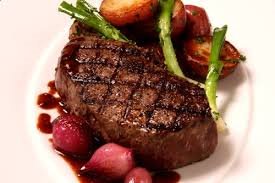

STEAK
A steak is a meat generally sliced across the muscle fibers, potentially including a bone. It is normally grilled, though can also be pan-fried. Steak can also be cooked in sauce, such as in steak and kidney pie, or minced and formed into patties, such as hamburgers. Besides cattle, steaks are also often cut from other animals, including bison, camel, goat, horse, kangaroo, sheep, ostrich, pigs, reindeer, turkey, deer, and zebu, as well as various types of fish, especially salmon and large fish such as swordfish, shark, and marlin. For some meats, such as pork, lamb and mutton, chevon, and veal, these cuts are often referred to as chops. Some cured meat, such as gammon, is commonly served as steak
T-BONE STEAK R200

ITALIAN STEAK R120
FILLET STEAK R102